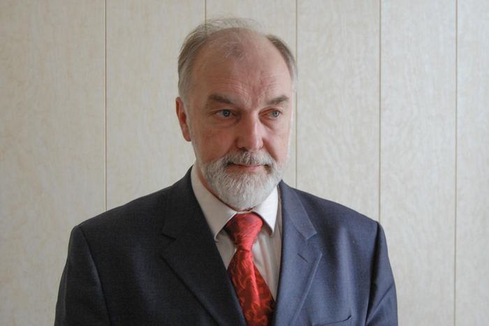

ЦИФРОВОЙ АТЛАС ИНЖЕНЕРНОГО ОПЫТА
История держится
на связях.
От человека — к машине. От решения — к источнику.
Исследуйте следы инженерной мысли и продолжайте их.

ПИЛОТНОЕ ИССЛЕДОВАНИЕ / 01Александр
Александр
Батанов
Чернобыль. Люди и роботы.
1986–1987 → сегодня
Корпус · 03.11.2026
КАК ЧИТАТЬ АТЛАСЗа каждой линией —
За каждой линией —
проверяемая история.
Выберите узел, откройте его связи и перейдите к основанию. Пунктиром отмечены связи проекта и личные упоминания.